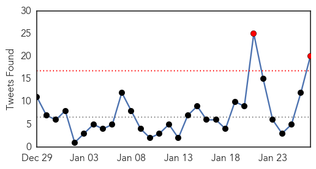
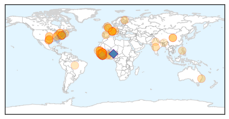
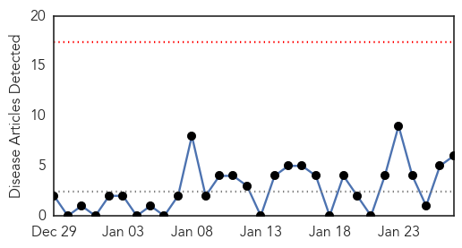
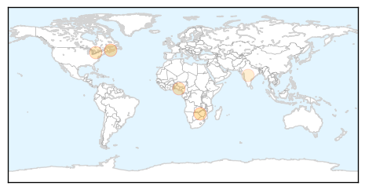
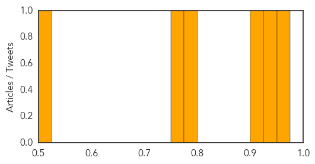

Ebola
30-Day Web Trend
1 alerts, 0 warnings

30-Day Twitter Trend
0 alerts, 0 warnings

Article Locations
Article Confidences

Top Articles:
- 1.000
- Fighting Ebola from day one
- 1.000
- Ebola is losing it strength in West Africa
- 1.000
- Tide turning in Ebola fight after hard lessons Republican American
- 1.000
- Scientists Ask If Ebola Immunizes As Well As Kills
- 1.000
- Scientists ask if Ebola immunizes as well as kills
- 1.000
- Critical-Care Physician From Canada Fought Ebola From Day One
- 1.000
- Are we starting to see the end of Ebola? Not quite, but we're well on our way
- 1.000
- Scientists ask if Ebola immunises as well as kills
- 1.000
- Is Ebola silently immunising some while killing their neighbours?
- 1.000
- Ebola – is the virus silently immunising as well as brutally killing?
- 0.999
- Liberia's Ebola Prospects: What it Takes to Get to Zero?
- 0.999
- Interview with Dr Rob Fowler
- 0.999
- Scientists ask if Ebola immunises as well as kills
- 0.998
- Has the Ebola Pandemic Been Contained? The Number of Ebola Virus Disease (EVD) Cases in Rapid Decline
- 0.998
- Ebola response: Is the world too late?
- 0.998
- Oxfam calls for Ebola recovery 'Marshall Plan'
- 0.998
- Dramatic decline in Ebola cases reported; West African countries remain 'cautiously optimistic'
- 0.997
- Doctor working in Ebola-hit Liberia says situation is 'improving significantly'
- 0.996
- Case Western researchers awarded NSF grant to develop new method to reduce risk of Ebola virus
- 0.996
- CWRU researcher on the clock to improve early Ebola detection
- 0.995
- Liberia closes centre at epicentre of Ebola outbreak - Africa
- 0.995
- Liberia closes Ebola center at epicenter of outbreak
- 0.994
- After Ebola, WHO to set up contingency fund, develop 'surge capacity'
- 0.994
- Ebola treatment center in Richardson to be dismantled
- 0.994
- Liberia closes Ebola treatment center
- 0.986
- China trains health professional in Ebola control
- 0.986
- Davos: UN launches $1 billion appeal for global Ebola response
- 0.982
- Chinese Women Contribute Greatly to Fight Against Ebola
- 0.980
- After Ebola, World Bank Chief Proposes Global Insurance Program For Future Outbreaks
- 0.980
- Three Dundalk businesses honored by comptroller
- 0.980
- Greater Baltimore Cultural Alliance places its first class of fellows
- 0.980
- New England slammed by 'crippling' storm
- 0.980
- European organic food and beverages market: France hosts world’s largest organic wine show
- 0.980
- Northeast snow disrupts travel plans at BWI
- 0.980
- Consumer advocates call for cheaper auto insurance for low-income residents in Maryland
- 0.980
- Bigger Baltimore boat show reflects rosy industry outlook
- 0.977
- China provides financial and technical support to Ebola control in Ghana
- 0.976
- What comes after Ebola?
- 0.975
- Oxfam calls for recovery Marshall Plan for Ebola victims
- 0.974
- WHO Executive Board appoints Dr Matshidiso Moeti as new Regional Director for Africa
- 0.974
- Liberia close to becoming Ebola-free
- 0.973
- WHO Executive Board appoints Dr Matshidiso Moeti as new Regional Director for Africa
- 0.968
- Guinea's Ebola Numbers May Be Higher Than Reported
- 0.965
- Fewer Ebola cases put potential vaccine at risk
- 0.962
- WHO adopts reforms to repair reputation after bungling Ebola
- 0.947
- Obama Pitches for Finding Ways to Detect Ebola Early
- 0.945
- MetroHealth and other Ebola-designated centers need federal money: editorial
- 0.945
- Additional support from Finland to combat Ebola in West Africa - Sierra Leone
- 0.945
- Sierra Leone News: HRS takes food distribution to Ebola-hit Western Rural « Awoko Newspaper
- 0.944
- Guinea Opposition Leader Says Slow Ebola Action Hurts Investment
Showing top 50 articles...
Top Tweets:
- 0.946
- CDC’s Team 5 scores a 10 fighting Ebola in Sierra Leone. Read more: http://t.co/dcaKoy8eN9 CDCinthefield
- 0.919
- SierraLeone. Pratiques funéraires et gestion des cimetières lors d'une épidémie de maladie à virus Ebola http://t.co/5jINV5b3Fn
- 0.918
- CDC’s first and only all-woman Ebola lab team in Sierra Leone set several new records. Read more:http://t.co/c3T6g1Qp8x
- 0.913
- Impact of the West African Ebola Virus Disease Outbreak on Foodsecurity http://t.co/VWNCoOXHu7
- 0.892
- RT: Ebola Epidemic Takes a Toll on Sierra Leone’s Surgeons http://t.co/Qq53Bgp84w
- 0.849
- Fighting the 'other' epidemic in SierraLeone http://t.co/0UW0DHWbVX distributes 1.8m antimalarials during ongoing Ebola outbreak
- 0.719
- Ebola death toll is slowing, but what next for blighted West African countries?... http://t.co/rFVCa71Fcp
- 0.656
- Braving Ebola: Portraits of the heroes and survivors at an Ebola treatment center in rural Liberia http://t.co/M1lWzA49Jq TackleEbola
- 0.634
- Ebola is not the end of the world and it can be beaten: Nurse and Ebola survivor speaks to the http://t.co/aeX4v2jopv EbolaResponse
- 0.625
- Guinée. Impact de l'Ebola sur l'agriculture et la sécurité alimentaire http://t.co/74JHyT93iB
- 0.581
- Kenya @ Text ‘Stop Ebola’ to 7979 to donate 20 BOB to the war against Ebola. RT if you will. AfricaAgainstEbola 24AUsummit
- 0.550
- STOP EBOLA http://t.co/QXskFMu5S1
- 0.526
- Ebola control: effect of asymptomatic infection and acquired immunity http://t.co/GxkxX69L04
- 0.517
- RT: MT: Celebrating Dr. Shetty from, who has been a leader in the response to fight Ebola http…
- 0.512
- .@WHO says Ebola cases top 22,000. Death toll closing in on 8,800. These numbers were unthinkable this time last yr. http://t.co/PzgxBpicaz
Meningitis
30-Day Web Trend
0 alerts, 0 warnings

30-Day Twitter Trend
0 alerts, 0 warnings

Article Locations
Article Confidences
Top Articles:
- 0.969
- Making HIV an ‘undetectable’ virus - Zimbabwe
- 0.949
- Meningitis vaccine could have saved Lower Sackville boy
- 0.903
- Meningitis vaccines offered to 45 people who had contact with teen who died - Halifax
- 0.798
- EPI: Edo Govt Introduces New Vaccine
- 0.763
- 3-year-old boy dies from bacteria that causes strep throat
- 0.512
- Top-selling vaccine made cheap shows challenge to Merck
Top Tweets:
-
No tweets found for Jan 27, 2015